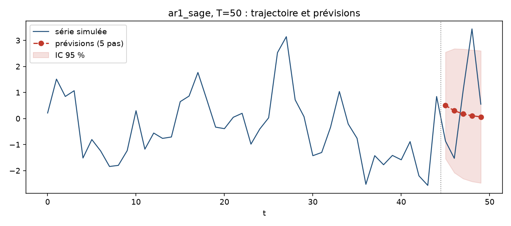
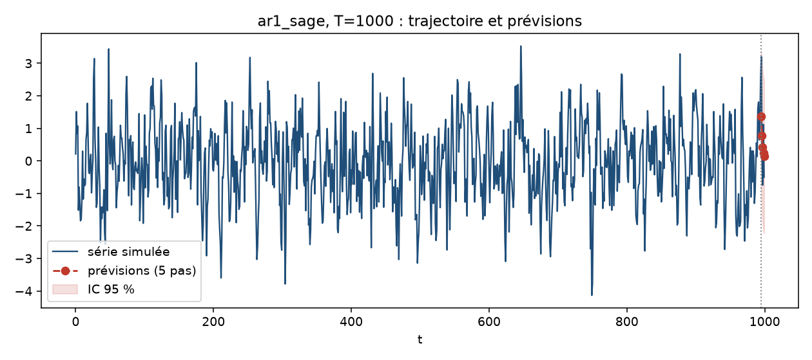
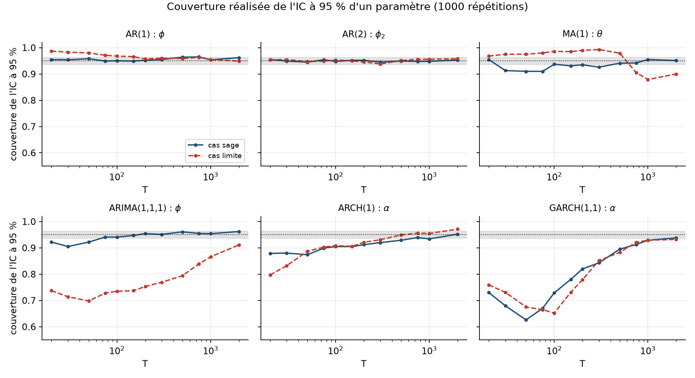
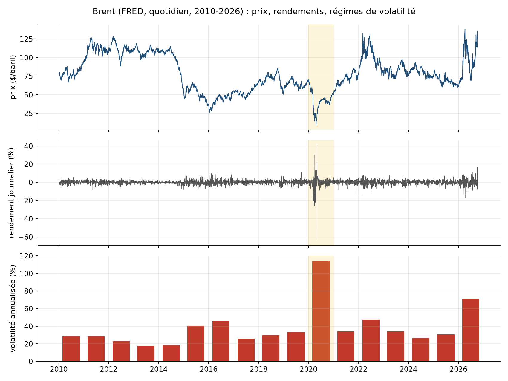
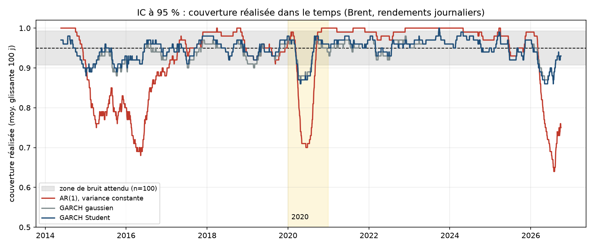
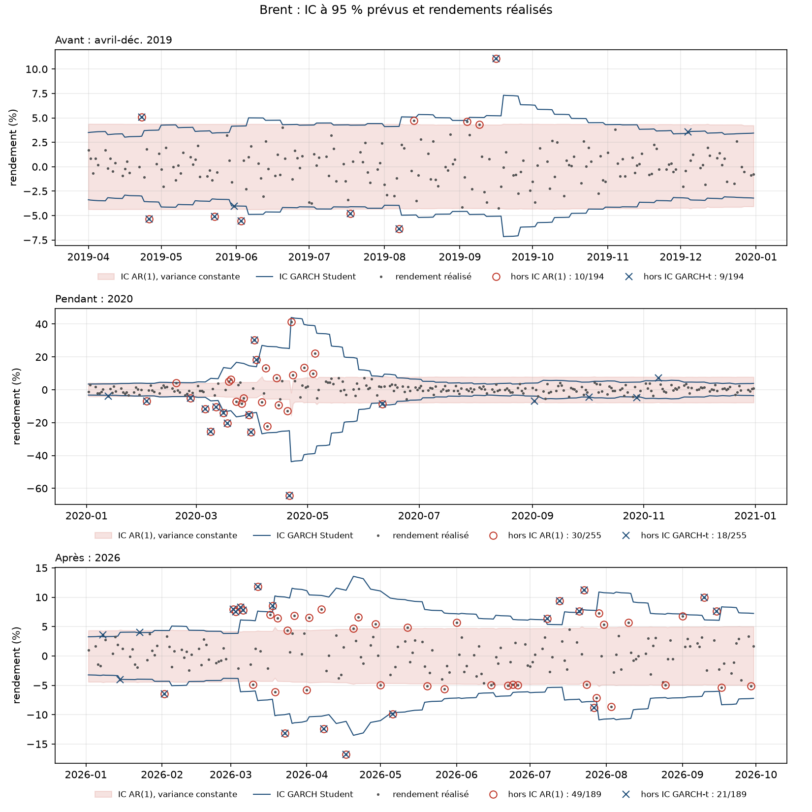
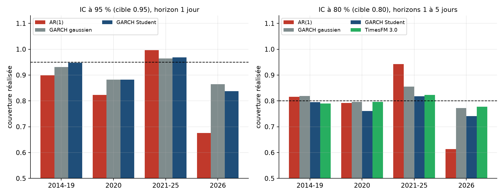

Les logiciels d'économétrie annoncent des intervalles de confiance (IC) à 95 %. Nous mesurons à quelle fréquence cette annonce est vraie, en deux temps. Par simulation (1000 répétitions, tailles de 20 à 2000), nous étudions six modèles (AR(1), AR(2), MA(1), ARIMA(1,1,1), ARCH(1), GARCH(1,1)) dans un cas « sage » et un cas « limite ». Sur données réelles, nous soumettons le prix du Brent (FRED, 2010-2026) à une prévision glissante comparant une variance constante, deux GARCH et le modèle de fondation TimesFM 3.0 de Google.
Résultats. (i) L'IC d'un paramètre ne couvre que 63 à 79 % du temps pour GARCH et pour un ARIMA(1,1,1) aux racines presque compensées, et les diagnostics de résidus ne le détectent pas ; les modèles AR sont sains dès $T\approx 50$. (ii) Sur le Brent, l'IC à 95 % d'une variance constante couvre de 0,68 (2026) à 0,996 (2021-2025) : trop étroit en crise, trop large ensuite ; GARCH corrige l'essentiel. (iii) TimesFM 3.0, sans aucun réglage, est indiscernable de GARCH à 80 % (couverture 0,803, $p=0{,}10$ au test de Diebold-Mariano) et significativement meilleur que la variance constante.
Les séries temporelles sont un outil standard en économétrie, en finance et en mathématiques appliquées. Un logiciel renvoie, pour un modèle ajusté, des paramètres estimés accompagnés d'un intervalle de confiance, ainsi que des prévisions assorties d'un intervalle de prévision. L'utilisateur lit ces intervalles comme une garantie : « à 95 % ». Le sujet du hackathon propose de prendre du recul en étudiant, par simulation, le comportement de ces modèles quand on fait varier la taille de l'échantillon et la volatilité, afin de mieux comprendre les résultats fournis sur des données réelles.
Nous en tirons une question unique, mesurable : la couverture réalisée d'un IC annoncé à 95 % est-elle de 95 % ? La simulation permet de la mesurer parce que le vrai paramètre est connu ; les données réelles permettent de vérifier que le défaut observé existe hors du laboratoire, en comparant l'intervalle de prévision à la valeur effectivement réalisée.
Ce que promet un IC à 95 %. « Si on refaisait l'expérience 100 fois, la vraie valeur serait dans l'intervalle environ 95 fois. » Les 5 cas où elle n'y est pas sont prévus : ce n'est pas un défaut.
Ce que nous testons. Pas la qualité des prédictions, mais la calibration de la promesse : on mesure la fréquence réelle de « dedans » et on la compare aux 95 % annoncés. C'est comme un prévisionniste météo qui annonce « 70 % de pluie » : s'il pleut réellement 4 fois sur 10 les jours où il l'annonce, il est mal calibré, même si ses prévisions ont l'air plausibles.
Ce que nous trouvons. La promesse n'est tenue que sous conditions. Selon la taille de l'échantillon et le régime de volatilité, la fréquence réelle vaut de 63 % (le logiciel est trop confiant) à presque 100 % (l'intervalle est trop large, donc peu informatif).
Ce que nous ne disons pas. Ni que les intervalles de confiance sont faux en général, ni que les modèles prédisent mal. Nous disons que le chiffre « 95 % » affiché ne suffit pas, et nous disons dans quelles conditions on peut s'y fier.
simts) : simulation, estimation, diagnostics, prévision, Monte Carlo avec couverture des IC.Le plan est le suivant : la section 2 rappelle les modèles et la notion de couverture ; la section 3 décrit le protocole ; la section 4 présente la simulation ; la section 5 les données réelles ; la section 6 discute les limites ; la section 7 conclut.
Soit $(\varepsilon_t)$ un bruit blanc d'écart-type $\sigma$. Les six modèles étudiés sont :
| Modèle | Équation | Condition |
|---|---|---|
| AR(1) | Xt = φ Xt−1 + εt | |φ| < 1 |
| AR(2) | Xt = φ1 Xt−1 + φ2 Xt−2 + εt | racines hors du cercle unité |
| MA(1) | Xt = εt + θ εt−1 | |θ| < 1 (inversibilité) |
| ARIMA(1,1,1) | ΔXt = φ ΔXt−1 + εt + θ εt−1 | |φ|, |θ| < 1 |
| ARCH(1) | rt = σt zt, σt² = ω + α rt−1² | ω > 0, 0 ≤ α < 1 |
| GARCH(1,1) | σt² = ω + α rt−1² + β σt−1² | α + β < 1 |
L'estimation est faite par maximum de vraisemblance gaussienne (statsmodels pour les modèles ARIMA, arch pour ARCH/GARCH).
Pour un paramètre $\theta_0$ et un IC $[\hat\ell,\hat u]$ à 95 %, la couverture est $P(\hat\ell\le\theta_0\le\hat u)$, estimée par la fréquence sur $N=1000$ simulations. Une couverture inférieure à 95 % signifie que le logiciel surestime sa précision ; supérieure, qu'il la sous-estime. Avec $N=1000$, l'incertitude de simulation est d'environ ±0,014 (bande grisée des figures).
Nous appelons $T$ minimal le plus petit $T$ de la grille tel que, pour ce $T$ et tous les $T$ plus grands, l'erreur relative du RMSE ($\mathrm{RMSE}/|\theta_0|$) est inférieure à 25 % et la couverture est au moins de 90 %. Exiger « tous les plus grands » évite le faux positif d'un $T$ qui passe par chance.
Chaque série est simulée par sa récurrence avec une période de chauffe de 200 points, une graine fixée et des innovations gaussiennes. Pour chaque modèle, nous choisissons un paramètre « sage » où le modèle se comporte bien, et un cas « limite » proche de la frontière de stationnarité ou d'inversibilité, comme le demande la consigne.
| Modèle | Cas sage | Cas limite |
|---|---|---|
| AR(1) | φ = 0,5 | φ = 0,98 |
| AR(2) | φ = (0,5 ; 0,2) | φ = (0,7 ; 0,28) |
| MA(1) | θ = 0,5 | θ = 0,98 |
| ARIMA(1,1,1) | φ = 0,5 ; θ = 0,3 | φ = 0,9 ; θ = −0,85 |
| ARCH(1) | ω = 0,2 ; α = 0,4 | ω = 0,2 ; α = 0,95 |
| GARCH(1,1) | ω = 0,1 ; α = 0,1 ; β = 0,8 | ω = 0,02 ; α = 0,08 ; β = 0,91 |
Pour chaque tirage de taille $T$, on estime sur les $T-5$ premières valeurs, on vérifie l'ACF et la PACF, on teste les résidus (Ljung-Box, y compris sur les carrés pour l'effet ARCH) et on prévoit les 5 valeurs suivantes, comparées aux valeurs mises de côté.
Pour chaque scénario, 1000 répétitions pour $T \in \{20, 30, 50, 75, 100, 150, 200, 300, 500, 750, 1000, 2000\}$ (graines communes entre les $T$). Pour chaque paramètre, nous relevons le biais, le RMSE, le RMSE relatif et la couverture de l'IC à 95 %.
Les prix quotidiens du Brent (DCOILBRENTEU) et du WTI (DCOILWTICO) viennent de FRED, du 4 janvier 2010 au 6 octobre 2026 (4108 jours communs). La prévision glissante utilise une fenêtre de 1000 jours, une ré-estimation tous les 5 jours depuis janvier 2014, et prévoit les rendements logarithmiques à 1 à 5 jours (647 origines, 3235 prévisions par modèle). Les modèles comparés sont AR(1) à variance constante, ARIMA(1,1,1) sur le log-prix (équivalent à un ARMA(1,1) sur les rendements), GARCH(1,1) à innovations gaussiennes et GARCH(1,1) à innovations de Student.
TimesFM 3.0 (Google Research, août 2026, 330 millions de paramètres) est un modèle de fondation préentraîné pour la prévision de séries temporelles. Nous l'utilisons en zéro-shot : mêmes contextes (1000 derniers rendements) et mêmes cibles, sans aucun entraînement. Il ne fournit que les déciles 0,1 à 0,9 : la comparaison avec lui se fait donc à 80 % ([q0,1 ; q0,9]).
La consigne demande, pour un tirage, l'estimation, l'ACF/PACF et la prévision à 5 pas. Le Tableau 2 montre ce que donne un tirage (graine 42).
| Modèle, cas | T = 50 | T = 1000 | Vrais paramètres |
|---|---|---|---|
| AR(1), sage : $\hat\phi$ | 0,595 | 0,557 | 0,5 |
| AR(1), limite : $\hat\phi$ | 0,941 | 0,970 | 0,98 |
| ARIMA, limite : $(\hat\phi,\hat\theta)$ | (0,32 ; −0,08) | (0,56 ; −0,44) | (0,9 ; −0,85) |
| GARCH, sage : $(\hat\alpha,\hat\beta)$ | (0,00 ; 1,00) | (0,145 ; 0,638) | (0,1 ; 0,8) |


Trois enseignements. D'abord, même à $T=1000$, $\hat\phi=0{,}557$ s'écarte de 0,5 de plus de deux erreurs standard : c'est le comportement normal d'un estimateur, et c'est pourquoi on répète. Ensuite, pour ARIMA limite, $T=1000$ donne $(\hat\phi,\hat\theta)=(0{,}56 ; -0{,}44)$ au lieu de $(0{,}9 ; -0{,}85)$ alors que le test de Ljung-Box sur les résidus affiche $p=0{,}96$ : le diagnostic « rassure » sur un modèle aux paramètres faux. Enfin, pour GARCH sage à $T=50$, l'optimiseur renvoie une solution au bord, $\hat\alpha=0$, $\hat\beta=1$.

| Modèle | Cas sage | Cas limite |
|---|---|---|
| AR(1) | 50 | 20 |
| AR(2) | 500 | 300 |
| MA(1) | 75 | 2000 |
| ARIMA(1,1,1) | 500 | 2000 |
| ARCH(1) | 500 | 150 |
| GARCH(1,1) | β : 1000 ; α : 2000 ; ω : jamais | β : 500 ; α : 1000 ; ω : jamais |
Un premier essai à 200 répétitions donnait des valeurs différentes pour quatre cases (AR(1) sage 75, MA(1) sage 300, ARCH(1) limite 200, β de GARCH sage 750). L'ordre de grandeur et le classement des modèles étaient inchangés.
La règle pratique qui s'en dégage : quelques dizaines de points suffisent pour un AR(1), plusieurs centaines pour les modèles à deux paramètres de dynamique, et plus d'un millier pour qu'un GARCH donne des paramètres fiables. Le paramètre $\omega$ n'atteint jamais le critère : sa vraie valeur est petite, donc l'erreur relative est mécaniquement grande.

| Question | Résultat | Verdict |
|---|---|---|
| Racine unitaire (ADF, log-niveau) | Brent p = 0,063 ; WTI p = 0,032 | ambigu |
| Mémoire des rendements | ACF(1) = −0,064 (Brent), −0,089 (WTI) | quasi vide |
| Effet ARCH (ARCH-LM) | p < 10−98 | écrasant |
| Cointégration Brent/WTI | Engle-Granger p = 0,0007 | plausible |
| Volatilité annualisée | 18 % (2013), 123 % (2020), 72 % (2026) | régimes |
Les rendements du Brent n'ont presque aucune mémoire en moyenne mais une volatilité fortement dépendante du temps : c'est le terrain naturel de GARCH. La kurtosis de Brent seul vaut 95 ; elle tombe à 12,8 quand on retire les 5 plus grands jours, tous entre mars et mai 2020 (le prix passe de 17,36 à 9,12 dollars le 21 avril 2020, soit −64 %). Le WTI est négatif (−37 dollars) le 20 avril 2020, ce qui exclut ce jour du calcul des log-rendements.
| Période | n | AR(1) | GARCH gaussien | GARCH Student |
|---|---|---|---|---|
| 2014-2019 | 306 | 0,899 | 0,931 | 0,948 |
| 2020 | 51 | 0,824 | 0,882 | 0,882 |
| 2021-2025 | 253 | 0,996 | 0,964 | 0,968 |
| 2026 | 37 | 0,676 | 0,865 | 0,838 |

La variance constante échoue lors de trois épisodes, 2015-2016, 2020 et 2026, où la couverture glissante tombe à 0,64-0,70. Entre les crises, elle est trop large (≈ 1,00 en 2018 et de 2021 à 2025) : la fenêtre de 1000 jours « se souvient » du dernier choc. GARCH reste dans la zone de bruit sauf au début des crises, où il élargit son IC avec un retard de quelques jours. Le score d'intervalle à 95 % confirme : 38 pour GARCH contre 96 pour AR(1) en 2020, 28 contre 38 en 2026.

La Figure 5 est parlante : en 2019, les deux modèles ont environ 5 % de ratés ; en 2020, 30 sur 255 jours (11,8 %) pour AR(1) contre 18 pour GARCH (7,1 %) ; en 2026, 49 sur 189 (25,9 %) contre 21 (11,1 %). Aucun modèle n'attrape le jour du −64 %.

| AR(1) | GARCH gaussien | GARCH Student | TimesFM 3.0 | |
|---|---|---|---|---|
| Couverture (cible 0,80) | 0,852 | 0,828 | 0,798 | 0,803 |
| Kupiec (p) | < 0,001 | < 0,001 | 0,79 | 0,71 |
| Score d'intervalle | 10,48 | 9,04 | 8,97 | 9,07 |
| Couverture 2026 | 0,614 | 0,772 | 0,741 | 0,778 |
Au test de Diebold-Mariano sur le score d'intervalle, TimesFM est significativement meilleur que la variance constante (écart −1,41 ; $p<0{,}001$) et indiscernable de GARCH (écart +0,11 ; $p=0{,}099$ contre GARCH Student ; +0,03 ; $p=0{,}62$ contre GARCH gaussien). Le résultat tient en ne gardant que l'horizon 1. Sur la prévision ponctuelle, aucun modèle ne bat la prévision nulle (RMSE 3,03 % ; TimesFM 3,10 %) : les rendements du pétrole ne sont pas prévisibles en moyenne.
Ce que cela dit : un modèle préentraîné, sans le moindre ajustement sur ces données, adapte la largeur de son intervalle au régime de volatilité aussi bien qu'un GARCH ajusté à chaque origine. Ce que cela ne dit pas : TimesFM ne fournit pas d'IC à 95 %, donc nous ne pouvons pas juger ses queues, là où l'écart était le plus fort.
Nous avons montré, par simulation puis sur le Brent, que l'intervalle à 95 % annoncé par un logiciel n'est pas à prendre au pied de la lettre : sa couverture réelle varie fortement avec la taille d'échantillon et le régime de volatilité, et les diagnostics usuels ne l'indiquent pas toujours. Les modèles AR sont sains très tôt ; les modèles de volatilité demandent des centaines d'observations ; un ARIMA aux racines presque compensées reste mal estimé jusqu'à $T=2000$. Sur le pétrole, une variance dépendante du temps, qu'elle vienne d'un GARCH ou d'un modèle de fondation, rend l'intervalle beaucoup plus honnête qu'une variance constante.
Les extensions naturelles sont : d'autres actifs et d'autres tailles de fenêtre, le bruit de Student en simulation, le test de ces règles sur des séries de nature différente (taux de change, électricité), et l'usage d'intervalles à 95 % pour les modèles de fondation qui les fourniraient.
python run_demo.py ar1 limite 1000 | un scénario de simulation, 1000 répétitions |
python analyse_donnees.py | tests préalables sur Brent et WTI |
python rolling_brent.py garch_t | prévision glissante (ar1, arma11, garch_n, garch_t) |
python rolling_timesfm.py | prévision glissante TimesFM 3.0 (poids 1,3 Go) |
python resume_rolling.pypython compare_timesfm.pypython test_dm.py | couvertures, comparaison à 80 %, tests de significativité |
python figures_rapport.py | figures de synthèse |
Environnement : Python 3.12, numpy, pandas, statsmodels, arch, matplotlib, torch 2.6.0 CPU et timesfm 3.0.2. Le code et les données sont dans le dépôt du projet (simts/, data/, outputs/).
DCOILBRENTEU et DCOILWTICO.